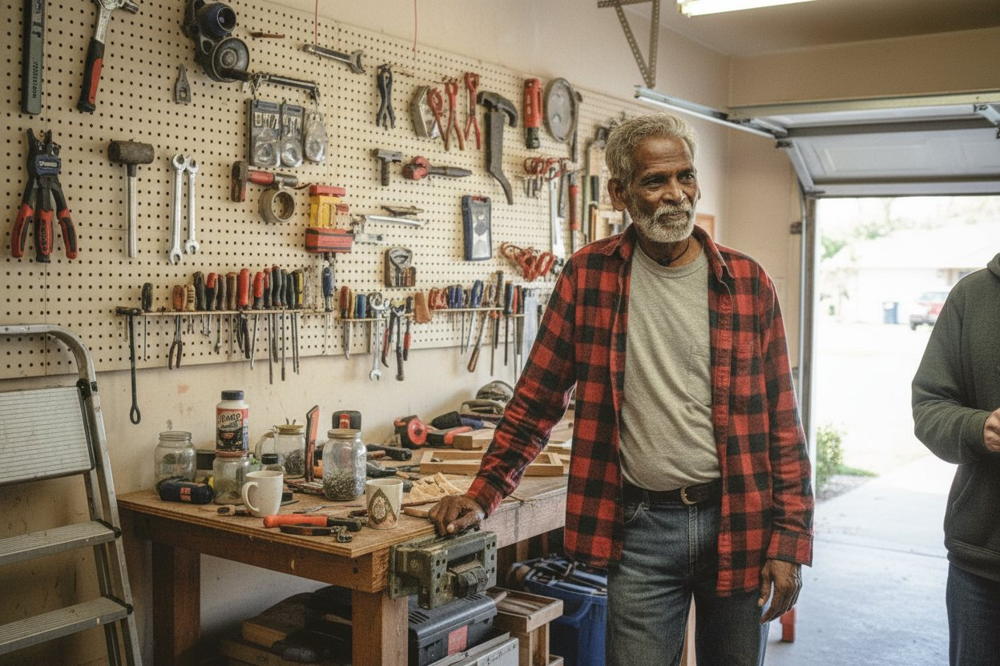

Every election, allocation and payout we route belongs to a person counting on it arriving. One audited connection between recordkeepers and insurers.
Section titles and descriptions follow Micruity's own published Solutions taxonomy.
Recordkeepers connect once. New counterparties arrive without a new build.
No re-keying, no faxed forms, no eleven-day reconciliation window.
Field-level lineage means an auditor can trace any number back to the system that produced it.

He retires in four months. The allocation has to be right the first time.
Two institutions, one schema. Nobody re-keys a participant's election by hand.
Three insurers, one payout. He sees a single number.
Illustrative photography, not customers. Generated image-to-image from licensed photographic sources, captioned as situations and never as named people. No quote is attributed to anyone. Replace with a real shoot before launch.
One authenticated connection per institution. Sandbox keys are issued on signup.
Routing, schema version and message type are determined from the payload, not from configuration you maintain.
Elections, allocations and payouts move between recordkeeper and insurer with idempotent writes.
Every field keeps the system and timestamp it came from, for the life of the record.
Independently attested, continuously monitored.
HSTS, CSP, frame and MIME protections on every response.
Every value carries the system and timestamp it came from.